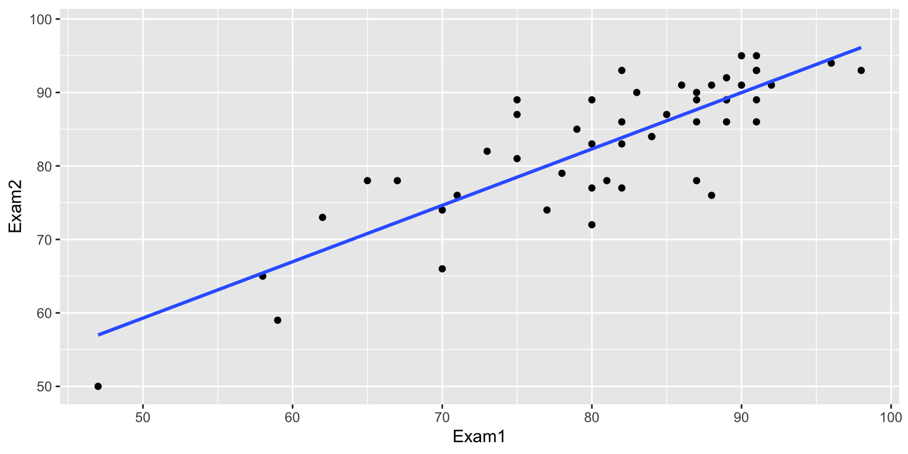

4 Inference from Models
Learning Outcomes:
- State the assumptions of the normal error regression model in context.
- Calculate confidence intervals and t-statistics using standard error formulas.
- State the hypotheses associated with each p-value in the lm summary table and explain what we should conclude from each test.
- Show how to calculate standard errors, t-statistics, residual standard error, Multiple R^2, and F-Statistic in the
lmsummary output in R.
- Interpret confidence and prediction intervals for expected response, as well as intervals for parameter estimates, and identify the sources of variability affecting each.
- Explain the regression effect in context.
- Make responsible decisions from data, considering issues such as representation and randomization, multiple testing, and the difference between statistical significance and practical importance.
4.1 The Normal Error Regression Model
You’ve probably noticed that most of the sampling distributions of statistics we’ve seen were symmetric and bell-shaped in nature. When working with statistics that have symmetric and bell-shaped distributions and know standard error formulas, it is possible to use well-known probability facts to obtain confidence intervals and perform hypothesis tests without actually performing simulation.
In this chapter, we’ll examine a set of assumptions that, if true, would ensure that statistics like means and differences in means, and regression coefficients follow symmetric and bell-shaped distributions. We’ll learn how to use facts from probability to calculate confidence intervals and p-values without actually performing simulation in these instances.
4.1.1 Example: Ice Cream dispenser
Suppose an ice cream machine is manufactured to dispense 2 oz. of ice cream per second, on average. If 15 people used the ice cream machine, holding the dispenser for different amounts of time, and each person got exactly 2 oz. per second, the relationship between time holding the dispenser and amount dispensed would look like this:

In reality, however, the actual amount dispensed each time it is used will vary due to unknown factors like:
- force applied to dispenser
- temperature
- build-up of ice cream
- other unknown factors
Thus, if 15 real people held the dispenser and recorded the amount of ice cream they got, the scatter plot we would see would look something like this:
We can think of the amount of ice cream a person receives as being a result of two separate components, often referred to as signal and noise.
Signal represents the average amount of ice cream a person is expected to receive based on the amount of time holding the dispenser. In this case, signal is given by the function \(\text{Expected Amount} = 2\times\text{Time}\). Everyone who holds the dispenser for \(t\) seconds is expected to receive \(2t\) ounces of ice cream.
Noise represents how much each person’s actual amount of ice cream deviates from their expected amount. For example, a person who holds the dispenser for 1.5 seconds and receives 3.58 oz. of ice cream will have received 0.58 ounces more than expected due to noise (i.e. factors beyond time holding the dispenser).
In a statistical model, we assume that the response value of a response variable we observe is the sum of the signal, or expected response, which is a function of the explanatory variables in the model, and noise, which results from deviations due to factors beyond those accounted for in the model.
4.1.2 Normal Distribution
It is common to model noise using a symmetric, bell-shaped distribution, known as a normal distribution.

We can think of the error term as a random draw from somewhere in the area below the bell-curve. For example, in the above illustration, most of the area under the curve lies between \(-1\leq x\leq 1\). If this curve represented the noise term in the ice cream example, it would mean that most people’s actual amount of ice cream dispensed would be within \(\pm 1\) ounce of their expected amount (or signal). Notice that the normal distribution is centered at 0, indicating that on average, a person would be expected to get an amount exactly equal to their signal, but that they might deviate above or below this amount by unexplained factors, which can be modeled by random chance.
A normal distribution is defined by two parameters:
- \(\mu\) representing the center of the distribution
- \(\sigma\) representing the standard deviation
This distribution is denoted \(\mathcal{N}(\mu, \sigma)\).

When the standard deviation is small, such as for the blue curve, noise tends to be close to 0, meaning the observed values will be close to their expectation. On the other hand, the green curve, which has higher standard deviation, would often produce noise values as extreme as \(\pm 2\) or more.
Note that the square of the standard deviation \(\sigma^2\) is called the variance. Some books denote the normal distribution as \(\mathcal{N}(\mu, \sigma^2)\), instead of \(\mathcal{N}(\mu,\sigma)\). We will use the \(\mathcal{N}(\mu,\sigma)\) here, which is consistent with R.
4.1.3 Modeling Ice Cream Dispenser
In this example, we’ll simulate the amount of ice cream dispensed for each person by adding a random number from a normal distribution with mean 0 and standard deviation 0.5 to the expected amount dispensed, which is given by \(2x\), where \(x\) represents time pressing the dispenser. We’ll let \(\epsilon_i\) represent the random noise term for the \(i\)th person.
Thus, amount dispensed (\(Y_i\)) for person \(i\) is given by
\[ Y_i = 2x_i+\epsilon_i, \text{ where } \epsilon_i\sim\mathcal{N}(0, 0.5) \]
Illustration

We simulate the amount dispensed for a sample of 15 people below. The rnorm(n, \(\mu\), \(\sigma\)) function generates \(n\) random numbers from a normal distribution with mean \(\mu\), and standard deviation \(\sigma\). The code below simulates 15 random numbers and adds them to the expected amount dispensed for 15 people who hold the dispenser for the times shown.
set.seed(10082020)
# set times
time <- c(1, 1.2, 1.5, 1.8, 2.1, 2.1, 2.3, 2.5, 2.6, 2.8, 2.9, 2.9, 3.1, 3.2, 3.6)
expected <- 2*time # expected amount
noise <-rnorm(15, 0, 0.5) %>% round(2) #generate noise from normal distribution
amount <- 2*time + noise # calculate observed amounts
Icecream <- data.frame(time, signal, noise, amount) # set up data table
kable((Icecream)) #display table| time | signal | noise | amount |
|---|---|---|---|
| 1.0 | 2.0 | 0.23 | 2.23 |
| 1.2 | 2.4 | -0.49 | 1.91 |
| 1.5 | 3.0 | 0.58 | 3.58 |
| 1.8 | 3.6 | -0.03 | 3.57 |
| 2.1 | 4.2 | 0.17 | 4.37 |
| 2.1 | 4.2 | -0.93 | 3.27 |
| 2.3 | 4.6 | 0.05 | 4.65 |
| 2.5 | 5.0 | -0.37 | 4.63 |
| 2.6 | 5.2 | -0.46 | 4.74 |
| 2.8 | 5.6 | 0.17 | 5.77 |
| 2.9 | 5.8 | -0.59 | 5.21 |
| 2.9 | 5.8 | 0.12 | 5.92 |
| 3.1 | 6.2 | 0.00 | 6.20 |
| 3.2 | 6.4 | 0.67 | 7.07 |
| 3.6 | 7.2 | 0.05 | 7.25 |
The scatterplot displays the amount dispensed, compared to the time pressing the dispenser. The red line indicates the line \(y=2x\). If there was no random noise, then each person’s amount dispensed would lie exactly on this line.
ggplot(data=Icecream1, aes(x=time, y=amount)) + geom_point() + ggtitle("Icecream Dispensed") + xlab("Time Pressing dispenser") + ylab("Amount Dispensed") + geom_abline(slope=2, intercept=0, color="red") +
annotate("text", label="y=2x", x= 3.5, y=6.5, size=10, color="red")
Estimating Regression Line
In a real situation, we would not see the signal and noise columns in the table or the red line on the graph. We would only see the time and amount, and points on the scatter plot. From these, we would need to estimate the location of the red line by fitting a least squares regression line to the data, as we’ve done before.
The blue line represents the location of the least squares regression line fit to the time and amounts observed.
ggplot(data=Icecream1, aes(x=time, y=amount)) + geom_point() + ggtitle("Icecream Dispensed") + xlab("Time Pressing dispenser") + ylab("Amount Dispensed") + stat_smooth(method="lm", se=FALSE) + geom_abline(slope=2, intercept=0, color="red") +
annotate("text", label="y=2x", x= 3.5, y=6.5, size=10, color="red")
The blue line is close, but not identical to the red line, representing the true (usually unknown) signal.
The slope and intercept of the blue line are given by:
IC_Model <- lm(data=Icecream1, lm(amount~time))
IC_Model
Call:
lm(formula = lm(amount ~ time), data = Icecream1)
Coefficients:
(Intercept) time
-0.1299 2.0312 Notice that these estimates are close, but not identical to the intercept and slope of the red line, which are 0 and 2, respectively.
The equation of the red line is given by:
\(Y_i = \beta_0 + \beta_1X_{i} + \epsilon_i\), where \(\epsilon_i\sim\mathcal{N}(0,\sigma)\),
where \(Y_i\) represents amount dispensed, and \(X_i\) represents time. \(\beta_0, \beta_1,\), and \(\sigma\) are the unknown model parameters associated with the ice cream machine’s process.
Using the values of \(b_0\) and \(b_1\) obtained by fitting a model to our observed data as estimates of \(\beta_0\) and \(\beta_1\), our estimated regression equation is
$$ Y_i = b_0 + b_1X_i + _i = -0.1299087 + 2.0312489X_i + _i
$$
where \(\epsilon_i\sim\mathcal{N}(0,\sigma)\).
An estimate for \(\sigma\) is given by
\(s =\sqrt{\frac{\text{SSR}}{n-(p+1)}} = \sqrt{\frac{\displaystyle\sum_{i=1}^n(y_i-\hat{y}_i)^2}{(n-(p+1))}}\).
We calculate \(s\) , using R.
s <- sqrt(sum(IC_Model$residuals^2)/(15-2))
s[1] 0.4527185In statistics it is common to use Greek letters like \(\beta_j\) and \(\sigma\), to represent unknown model parameters, pertaining to a population or process (such as the ice cream dispenser), and English letters like \(b_j\) and \(s\) to represent statistics calculated from data.
The estimates of \(b_0 = -0.1299087\), \(b_1=2.0312489\), and \(s = 0.4527185\) are reasonably close estimates to the values \(\beta_0=0, \beta_1=2\), and \(\sigma = 0.5\), that we used to generate the data.
In a real situation, we’ll have only statistics \(b_0\), \(b_1\), and \(s\), and we’ll need to use them to draw conclusions about parameters \(\beta_0=0, \beta_1=2\), and \(\sigma = 0.5\).
4.1.4 Normal Error Regression Model
In the ice cream example, the relationship between expected amount and time holding the dispenser was given by a linear equation involving a single numeric explanatory variable. We can generalize this to situations with multiple explanatory variables, which might be numeric or categorical.
Individual observations are then assumed to vary from their expectation in accordance with a normal distribution, representing random noise (or error).
The mathematical form of a normal error linear regression model is
\(Y_i = \beta_0 + \beta_1X_{i1}+ \ldots + \beta_pX_{ip} + \epsilon_i\), with \(\epsilon_i\sim\mathcal{N}(0,\sigma)\).
Note that in place of \(X_{ip}\), we could have indicators for categories, or functions of \(X_{ip}\), such as \(X_{ip}^2\), \(\text{log}(X_{ip})\), or \(\text{sin}(X_{ip})\).
The quantities \(\beta_0, \beta_1, \ldots, \beta_p\) are parameters, pertaining to the true but unknown data generating mechanism.
The estimates \(b_0, b_1, \ldots, b_p\), are statistics, calculated from our observed data.
We use statistics \(b_0, b_1, \ldots, b_p\) to obtain confidence intervals and hypothesis tests to make statements about parameters \(\beta_0, \beta_1, \ldots, \beta_p\).
Assumptions of Normal Error Regression Model
When generating data for the ice cream machine, we assumed four things:
Linearity - the expected amount of ice cream dispensed (i.e the signal) is a linear function of time the dispenser was pressed.
Constant Variance - individual amounts dispensed varied from their expected amount with equal variability, regardless of the amount of time. That is, the amount of variability in individual amounts dispensed was the same for people who held the dispenser for 1 s. as for people who held it for 2 s. or 3 s., etc.
Normality - individual amounts dispensed varied from their expected amount in accordance with a normal distribution.
Independence - the amount of ice cream dispensed for one person was not affected by the amount dispensed for anyone else.
More generally, the normal error regression model assumes:
Linearity - the expected response is a linear function of the explanatory variable(s).
Constant Variance - the variance between individual values of the response variable are the same for any values/categories of the explanatory variable(s)
Normality - for any values/categories of the explanatory variable(s) individual response values vary from their expectation in accordance with a normal distribution.
Independence - individual response values are not affected by one another
4.1.5 Examples of Normal Error Regression Model
We can formulate all of the examples we’ve worked with so far in terms of the normal error regression model.
In the house price example, consider the following models:
Model 1:
\(\text{Price}_i = \beta_0 + \beta_1\text{Sq.Ft.}_{i} + \epsilon_i\), where \(\epsilon_i\sim\mathcal{N}(0,\sigma)\).
If we use this model, we’re saying that we believe the expected price of a house is a linear function of its size, and that for any given size, the distribution of actual prices are normally distributed around their expected value of \(\beta_0 + \beta_1\text{Sq.Ft.}_{i}\). Furthermore, we’re saying that the amount of variability in hourse prices is the same for houses of any size.
Model 2:
\(\text{Price}_i = \beta_0 + \beta_2\text{Waterfront}_{i}+ \epsilon_i\), where \(\epsilon_i\sim\mathcal{N}(0,\sigma)\).
If we use this model, we’re saying that we believe the expected price of a house depends only on whether or not it is on the waterfront, and that prices of both waterfront and non-waterfront houses follow normal distributions. Though these distributions may have different means (\(\beta_0\) for non-waterfront houses, and \(\beta_1\) for waterfront houses), the amount of variability in prices should be the same for waterfront as non-waterfront houses.
Model 3:
\(\text{Price}_i = \beta_0 + \beta_1\text{Sq.Ft.}_{i}+ \beta_2\text{Waterfront}_{i}+ \beta_3\times\text{Sq.Ft.}_i\times\text{Waterfront}_{i} + \epsilon_i\), where \(\epsilon_i\sim\mathcal{N}(0,\sigma)\).
and
Model 4:
\(\text{Price}_i = \beta_0 + \beta_1\text{Sq.Ft.}_{i}+ \beta_2\text{Waterfront}_{i}+ \beta_3\times\text{Sq.Ft.}_i\times\text{Waterfront}_{i} + \epsilon_i\), where \(\epsilon_i\sim\mathcal{N}(0,\sigma)\).
Both of Models 3 and 4 assume that actual prices of houses with the same size and waterfront status are normally distributed, and that the mean of the normal distribution is a linear function of its size. Model 3 allows for the intercept of the lines to differ between waterfront and non-waterfront houses, while Model 4 allows both the intercept and slope to differ. Both assume that the amount of variability among houses of the same size and waterfront status is the same.
4.1.6 Implications of Normal Error Regression Model
If we really believe that data come about as the normal error regression model describes, then probability theory tells us that regression coefficients \(b_j\)’s, representing differences between categories for categorical variables and rates of change for quantitative variables, follow symmetric and bell-shaped distributions. We can use this fact to create confidence intervals and perform hypothesis tests, without needing to perform simulation. This is, in fact what R does in it’s model summary output.
These methods are only valid, however, if data can reasonably be thought of as having come from a process consistent with the assumptions of the normal error regression model process. If we don’t believe that our observed data can be reasonably thought of as having come from such a process, then the confidence intervals and p-values produced by R, and other places that rely on probability-based methods will not be reliable.
We close the section with a philosophical question:
Do data really come about from processes like the normal error regression model? That is, do you think it is reasonable to believe that data we see in the real world (perhaps the amount of ice cream dispensed by an ice cream machine) represent independent outcomes of a process in which expected outcomes are a linear function of explanatory variables, and deviate from their expectation according to a normal distribution with constant variance?
We won’t attempt to answer that question here, but it is worth thinking about. After all, it is an assumption on which many frequently employed methods of statistical inference depends.
4.2 Standard Error and Confidence Intervals
4.2.1 Common Standard Error Formulas
In the normal error regression model, \(\sigma\) is an unknown model parameter representing the standard deviation in response values among cases with the same values/categories of explanatory variable(s). We estimate \(\sigma\) using the statistic
\(s =\sqrt{\frac{\text{SSR}}{n-(p+1)}} = \sqrt{\frac{\displaystyle\sum_{i=1}^n(y_i-\hat{y}_i)^2}{(n-(p+1))}}\).
\(s\) is not the same as the standard errors of statistics we estimated using bootstrapping in Chapter 3. It is, however, related to these standard errors. In fact, standard errors for common statistics like sample means, differences in means, and regression coefficients can be approximated using formulas involving \(s\).
So far, we’ve used simulation (permutation tests and bootstrap intervals) to determine the amount of variability associated with a test statistic or estimate, in order to perform hypotheses tests and create confidence intervals. In special situations, there are mathematical formulas, based on probability theory, that can be used to approximate these standard errors without having to perform the simulations.
Theory-Based Standard Error Formulas
| Statistic | Standard Error |
|---|---|
| Single Mean | \(SE(b_0)=\frac{s}{\sqrt{n}}\) |
| Difference in Means | \(SE(b_j)=s\sqrt{\frac{1}{n_1}+\frac{1}{n_2}}\) |
| Single Proportion | \(SE(\hat{p}) = \sqrt{\frac{\hat{p}(1-\hat{p})}{n}}\) |
| Difference in Proportions | \(SE(\hat{p}) = \sqrt{\left(\frac{\hat{p_1}(1-\hat{p}_1)}{n_1}+\frac{\hat{p_2}(1-\hat{p_2})}{n_2}\right)}\) |
| Intercept in Simple Linear Regression | \(SE(b_0)=s\sqrt{\frac{1}{n}+\frac{\bar{x}^2}{\sum(x_i-\bar{x})^2}}\) |
| Slope in Simple Linear Regression | \(SE(b_1)=\sqrt{\frac{s^2}{\sum(x_i-\bar{x})^2}}=\sqrt{\frac{1}{n-2}\frac{{\sum(\hat{y}_i-y_i)^2}}{\sum(x_i-\bar{x})^2}}\) |
\(s=\sqrt{\frac{\displaystyle\sum_{i=1}^n(y_i-\hat{y}_i)^2}{(n-(p+1))}} = \sqrt{\frac{\text{SSR}}{(n-(p+1))}}\), (p is number of regression coefficients not including \(b_0\)). \(s\) is an estimate of the variability in the response variable among cases where the explanatory variable(s) are the same. Note that in the one-sample case, this simplifies to the standard deviation formula we’ve seen previously.
In the 2nd formula, the standard error estimate \(s\sqrt{\frac{1}{n_1+n_2}}\) is called a “pooled” estimate since it combines information from all groups. When there is reason to believe standard deviation differs between groups, we often use an “unpooled” standard error estimate of \(\sqrt{\frac{s_1^2}{n_1}+\frac{s_2^2}{n_2}}\), where \(s_1, s_2\) represent the standard deviation for groups 1 and 2. This can be used in situations where the explanatory variable is categorical and we have doubts about the constant variance assumption.
There is no theory-based formula for standard error associated with the median or standard deviation. For these, and many other statistics, we rely on simulation to estimate variability between samples.
There are formulas for standard errors associated with coefficients in multiple regression, but these require mathematics beyond what is assumed in this class. They involve linear algebra and matrix inversion, which you can read about here if you are interested.
When the sampling distribution is symmetric and bell-shaped, approximate 95% confidence intervals can be calculated using the formula,
\[ \text{Statistic} \pm 2\times \text{Standard Error}, \]
where the standard error is estimated using a formula, rather than through bootstrapping.
We’ll go through some examples to illustrate how to calculate and interpret \(s\) and \(SE(b_j)\).
4.2.2 Example: Difference in Means
We’ll use the normal error regression model to predict a lake’s mercury level, using location (N vs S) as the explanatory variable.
The regression model is:
\[ \text{Mercury} = \beta_0 +\beta_1 \times\text{Location}_{\text{South}} + \epsilon_i, \text{where } \epsilon_i\sim\mathcal{N}(0, \sigma) \]
This model assumes:
Linearity - there is no linearity assumption when the explanatory variable is categorical.
Constant Variance - the variance between mercury levels of individual lakes is the same for Northern Florida, as for Southern Florida.
Normality - mercury levels are normally distributed in Northern Florida and also in Southern Florida.
Independence - mercury levels of individual lakes are not affected by those of other lakes.
The lm summary command in R returns information pertaining to the model.
Lakes_M <- lm(data=FloridaLakes, Mercury ~ Location)
summary(Lakes_M)
Call:
lm(formula = Mercury ~ Location, data = FloridaLakes)
Residuals:
Min 1Q Median 3Q Max
-0.65650 -0.23455 -0.08455 0.24350 0.67545
Coefficients:
Estimate Std. Error t value Pr(>|t|)
(Intercept) 0.42455 0.05519 7.692 0.000000000441 ***
LocationS 0.27195 0.08985 3.027 0.00387 **
---
Signif. codes: 0 '***' 0.001 '**' 0.01 '*' 0.05 '.' 0.1 ' ' 1
Residual standard error: 0.3171 on 51 degrees of freedom
Multiple R-squared: 0.1523, Adjusted R-squared: 0.1357
F-statistic: 9.162 on 1 and 51 DF, p-value: 0.003868The estimates column returns the estimates of \(b_0\) and \(b_1\). The estimated regression equation is
\[ \widehat{\text{Mercury}} = 0.42455 + 0.27185\times\text{Location}_{\text{South}} \]
Estimating \(\sigma\)
The Residual Standard Error in the output gives the value of \(s\), and estimate of \(\sigma\).
\(s =\sqrt{\frac{\text{SSR}}{n-(p+1)}} = \sqrt{\frac{\displaystyle\sum_{i=1}^n(y_i-\hat{y}_i)^2}{(n-(p+1))}}\).
SSR is:
sum(Lakes_M$residuals^2)[1] 5.126873Since LocationSouth is our only explanatory variable, \(p=1\), and since we have 53 lakes in the sample, \(n=53\).
Thus,
\(s =\sqrt{\frac{5.126873}{53-(1+1)}} = 0.317\).
The standard deviation in mercury concentrations among lakes in the same part of the state is estimated to be 0.317 ppm.
THe second column in the coefficients table gives standard errors associated with \(b_0\) and \(b_1\). These tell us how much these statistics are expected to vary between samples of the given size.
Estimating \(\text{SE}(b_0)\) and \(\text{SE}(b_1)\)
We’ll use the theory-based formulas to calculate the standard errors for \(b_0\) and \(b_1\).
In this case, \(b_0\) represents a single mean, the mean mercury level for lakes in Northern Florida. Since there are 33 such lakes, the calculation is:
\(SE(b_0)=\frac{s}{\sqrt{n}} = \frac{0.317}{\sqrt{33}} \approx 0.055\)
The standard error of intercept \(b_0\) is 0.055. This represents the variability in average mercury level in different samples of 33 lakes from Northern Florida.
\(SE(b_1)=s\sqrt{\frac{1}{n_1}+\frac{1}{n_2}} = 0.317\sqrt{\frac{1}{20}+{1}{33}} = 0.0898\)
The standard error of slope \(b_1\) is 0.0898. This represents the variability in average difference in mercury levels between samples of 33 lakes from Northern Florida and 20 lakes from Southern Florida.
These numbers match the values in the Std. Error column of the coefficients table of the lm summary output.
A 95% confidence interval for \(\beta_0\) is given by
\[ \begin{aligned} & b_0 \pm 2\times\text{SE}(b_0) \\ & = 0.42455 \pm 2\times{0.055} \\ & = (0.314, 0.535) \end{aligned} \]
A 95% confidence interval for \(\beta_1\) is given by
\[ \begin{aligned} & b_1 \pm 2\times\text{SE}(b_1) \\ & = 0.272 \pm 2\times{0.0898} \\ & = (0.09, 0.45) \end{aligned} \]
We are 95% confident that the average mercury level in Southern Lakes is between 0.09 ppm and 0.45 ppm higher than in Northern Florida.
These intervals can be obtained directly in R using the confint command.
confint(Lakes_M, level=0.95) 2.5 % 97.5 %
(Intercept) 0.31374083 0.5353501
LocationS 0.09157768 0.4523314Comparison to Bootstrap
We previously calculated \(\text{SE}(b_1)\) and a 95% confidence interval for \(\beta_1\), which are shown below.
Bootstrap Standard Error
SE_b1 <- sd(NS_Lakes_Bootstrap_Results$Bootstrap_b1)
SE_b1[1] 0.09549244Bootstrap 95% Confidence Interval:
Sample_b1 <- Lakes_M$coefficients[2]
c(Sample_b1 - 2*SE_b1, Sample_b1 + 2*SE_b1) LocationS LocationS
0.08096967 0.46293942 NS_Lakes_Bootstrap_Plot_b1 +
geom_segment(aes(x=Sample_b1 - 2*SE_b1,xend=Sample_b1 + 2*SE_b1, y=50, yend=50),
color="gold", size=10, alpha=0.01) 
The formula-based standard error and confidence interval and those produced by bootstrapping are both approximations, so they are not expected to be identical, but should be close.
4.2.3 Example: Regression Slope and Intercept
We’ll use the normal error regression model to predict a lake’s mercury level, using pH as the explanatory variable.
The regression model is:
\[ \text{Mercury} = \beta_0 +\beta_1 \times\text{pH} + \epsilon_i, \text{where } \epsilon_i\sim\mathcal{N}(0, \sigma) \]
This model assumes:
Linearity - the mercury level is a linear function of pH.
Constant Variance - the variance between mercury levels of individual lakes is the same for each pH level.
Normality - for each pH, mercury levels are normally distributed.
Independence - mercury levels of individual lakes are not affected by those of other lakes.
We might have doubts about some of these assumptions. For example, if we believe there might be more variability in mercury levels among lakes with higher pH levels than lower ones (a violation of the constant variance assumption), or that lakes closer together are likely to have similar mercury levels (a violation of the independence assumption) then the results of the model might not be reliable.
Later in this chapter, we’ll learn ways to check the appropriateness of these assumptions. For now, we’ll assume that the model is a reasonable enough approximation of reality and use it accordingly.
The lm summary command in R returns information pertaining to the model.
M_pH <- lm(data=FloridaLakes, Mercury ~ pH)
summary(M_pH)
Call:
lm(formula = Mercury ~ pH, data = FloridaLakes)
Residuals:
Min 1Q Median 3Q Max
-0.48895 -0.19188 -0.05774 0.09456 0.71134
Coefficients:
Estimate Std. Error t value Pr(>|t|)
(Intercept) 1.53092 0.20349 7.523 0.000000000814 ***
pH -0.15230 0.03031 -5.024 0.000006572811 ***
---
Signif. codes: 0 '***' 0.001 '**' 0.01 '*' 0.05 '.' 0.1 ' ' 1
Residual standard error: 0.2816 on 51 degrees of freedom
Multiple R-squared: 0.3311, Adjusted R-squared: 0.318
F-statistic: 25.24 on 1 and 51 DF, p-value: 0.000006573The estimated regression equation is
\[ \widehat{\text{Mercury}} = 1.53 - 0.15 \times\text{pH} \]
Estimating \(\sigma\)
As we saw in the ice cream example, an estimate for \(\sigma\) is given by
\(s =\sqrt{\frac{\text{SSR}}{n-(p+1)}} = \sqrt{\frac{\displaystyle\sum_{i=1}^n(y_i-\hat{y}_i)^2}{(n-(p+1))}}\).
We calculate \(s\) , using R.
SSR is:
sum(M_pH$residuals^2)[1] 4.045513Since pH is our only explanatory variable, \(p=1\), and since we have 53 lakes in the sample, \(n=53\).
Thus,
\(s =\sqrt{\frac{4.045513}{53-(1+1)}} = 0.2816\).
The standard deviation in mercury concentrations among lakes with the same pH is estimated to be 0.2816 ppm.
The residual standard error in the summary output returns the value of \(s\).
Estimating \(\text{SE}(b_0)\) and \(\text{SE}(b_1)\)
Now, we’ll use the theory-based formulas to calculate standard error associated with the intercept and slope of the regression line relating mercury level and pH in Florida lakes.
We calculate \(\bar{x}\), the mean pH, and \(\sum(x_i-\bar{x})^2\).
xbar <- mean(FloridaLakes$pH)
xbar[1] 6.590566Sxx <- sum((FloridaLakes$pH - xbar)^2)
Sxx[1] 86.32528\(SE(b_0)=s\sqrt{\frac{1}{n}+\frac{\bar{x}^2}{\sum(x_i-\bar{x})^2}} = 0.2816\sqrt{\frac{1}{53}+\frac{6.59^2}{86.325}}\approx 0.2034\)
The standard error of intercept \(b_0\) is 0.2034. This represents the variability in estimated mercury level in lakes with pH of 0, between different samples of size 53. Since none of the lakes have pH levels of 0, this is not a meaningful statistic.
\(SE(b_1)=\sqrt{\frac{s^2}{\sum(x_i-\bar{x})^2}}=\sqrt{\frac{0.2816^2}{86.325}} \approx 0.0303\)
The standard error of slope \(b_1\) is 0.0303. This represents the variability in estimated rate of change in mercury level per one unit increase in pH, between different samples of size 53.
These numbers match the values in the Std. Error column of the coefficients table of the lm summary output.
A 95% confidence interval for \(\beta_1\) is given by
\[ \begin{aligned} & b_1 \pm 2\times\text{SE}(b_1) \\ & = -0.15 \pm 2\times{0.0303} \\ & = (-0.09, -0.21) \end{aligned} \]
We are 95% confident that for each one unit increase in pH, mercury concentration is expected to decrease between 0.09 and 0.21 ppm, on average.
We can also use the confint() command to obtain these intervals.
confint(M_pH, level=0.95) 2.5 % 97.5 %
(Intercept) 1.1223897 1.93944769
pH -0.2131573 -0.09144445Comparison to Bootstrap
We previously calculated \(\text{SE}(b_1)\) and a 95% confidence interval for \(\beta_1\), which are shown below.
Bootstrap Standard Error for \(b_1\):
Sample_b1 <- M_pH$coefficients[2]
SE_b1 <- sd(Lakes_Bootstrap_Slope_Results$Bootstrap_b1)
SE_b1[1] 0.02694529Bootstrap 95% Confidence Interval for \(\beta_1\):
c(Sample_b1 - 2*SE_b1, Sample_b1 + 2*SE_b1) pH pH
-0.20619145 -0.09841028 The formula-based standard error and confidence interval and those produced by bootstrapping are both approximations, so they are not expected to be identical, but should be close.
4.2.4 Example: Single Mean
Finally, we’ll use a model to estimate the average mercury level among all lakes in Florida. For this, we use an “Intercept-only” model, with no explanatory variables.
The model equation is:
The regression model is:
\[ \text{Mercury} = \beta_0 + \epsilon_i, \text{where } \epsilon_i\sim\mathcal{N}(0, \sigma) \]
This model assumes:
Linearity - there is no linearity assumption since there are no explanatory variables.
Constant Variance - there is no linearity assumption since there are no explanatory variables.
Normality - mercury levels among all lakes in Florida are normally distributed.
Independence - mercury levels of individual lakes are not affected by those of other lakes.
The lm summary command in R returns information pertaining to the model.
Lakes_M0 <- lm(data=FloridaLakes, Mercury ~ 1)
summary(Lakes_M0)
Call:
lm(formula = Mercury ~ 1, data = FloridaLakes)
Residuals:
Min 1Q Median 3Q Max
-0.48717 -0.25717 -0.04717 0.24283 0.80283
Coefficients:
Estimate Std. Error t value Pr(>|t|)
(Intercept) 0.52717 0.04684 11.25 0.00000000000000151 ***
---
Signif. codes: 0 '***' 0.001 '**' 0.01 '*' 0.05 '.' 0.1 ' ' 1
Residual standard error: 0.341 on 52 degrees of freedomThe model estimates that the average mercury level is 0.527, which matches the sample mean, as we know it should.
Estimating \(\sigma\)
An estimate for \(\sigma\) is given by
\(s =\sqrt{\frac{\text{SSR}}{n-(p+1)}} = \sqrt{\frac{\displaystyle\sum_{i=1}^n(y_i-\hat{y}_i)^2}{(n-(p+1))}}\).
We calculate \(s\) , using R.
SSR is:
sum(Lakes_M0$residuals^2)[1] 6.047875Since there are no explanatory variables, \(p=0\), and since we have 53 lakes in the sample, \(n=53\).
When there are no explanatory variables, \(s\) is simply an estimate of the standard deviation of individual observations of the response variable.
Thus,
\(s =\sqrt{\frac{6.047875}{53-(0+1)}} = 0.341\).
The standard deviation in mercury concentrations among lakes in Florida is estimated to be 0.341 ppm.
This matches residual standard error in the summary output returns the value of \(s\).
Estimating \(\text{SE}(b_0)\)
Now, we’ll use the theory-based formulas to calculate standard error associated with \(b_0\), the average mercury level among all lakes in Florida.
\(SE(b_0)=\frac{s}{\sqrt{n}}=\frac{0.341}{\sqrt{53}}\approx0.04684\)
The standard error of mean \(b_0\) is 0.0484. This represents the variability in mean mercury level among samples of 53 lakes.
Notice that the standard error of the mean is less than the standard deviation of individual observations, and that the standard error of the mean decreases as sample size increases, as we’ve seen previously.
A 95% confidence interval for \(\beta_0\), is:
\[ \begin{aligned} & b_0 \pm 2\times\text{SE}(b_0) \\ & = 0.527 \pm 2\times{0.0484} \\ & = (0.43, 0.62) \end{aligned} \]
We are 95% confident that the average mercury level among all lakes in Florida is between 0.43 and 0.62 ppm.
We can also obtain this interval using the confint() command.
confint(Lakes_M0, level=0.95) 2.5 % 97.5 %
(Intercept) 0.4331688 0.6211709Comparison to Bootstrap
Here are the bootstrap standard error and confidence interval we calculated previously.
Bootstrap Standard Error
SE_mean <- sd(Lakes_Bootstrap_Results_Mean$Bootstrap_Mean)
SE_mean[1] 0.04595372Bootstrap 95% Confidence Interval:
c(mean - 2*SE_mean, mean + 2*SE_mean) [1] 0.4352624 0.6190773Lakes_Bootstrap_Mean_Plot +
geom_segment(aes(x=mean - 2*SE_mean,xend=mean + 2*SE_mean, y=50, yend=50),
color="gold", size=10, alpha=0.01) The standard error and interval are very close to those obtained using the approximation formulas.
4.2.5 CI Method Comparison
We’ve now seen 3 different ways to obtain confidence intervals based on statistics calculated from data.
The table below tells us what must be true of the sampling distribution for a statistic in order to use each technique.
| Technique | No Gaps | Bell-Shaped | Known Formula for SE |
|---|---|---|---|
| Bootstrap Percentile | x | ||
| Bootstrap Standard Error | x | x | |
| Theory-Based | x | x | x |
4.3 t-tests
4.3.1 t-Distribution
A t-distribution is a symmetric, bell-shaped curve. The t-distribution depends on a parameter called degrees of freedom, which determines the thickness of the distribution’s tails.
When the sampling distribution for a statistic is symmetric and bell-shaped, it can be approximated by a t-distribution. As the sample size increases, so do the degrees of freedom in the t-distribution.
As the degrees of freedom grow large, we see that the t-distributions get closer together, converging to a bell-shaped curve. This distribution is called a standard normal distribution.

4.3.2 t-tests
When the sampling distribution of a statistic is symmetric and bell-shaped, then the ratio
\[ t= \frac{{\text{Statistic}}}{\text{SE}(\text{Statistic})} \]
approximately follows a t-distribution.
The statistic \(t\) is called a t-statistic.
We’ll use this t-statistic as the test statistic in our hypothesis test.
The degrees of freedom are given by \(n-(p+1)\), where \(p\) represents the number of terms in the model, not including the intercept.
To find a p-value, we use a t-distribution to find the probability of obtaining a t-statistic as or more extreme than the one calculated from our data.
A hypothesis test based on the t-statistic and t-distribution is called a t-test.
4.3.3 t-test Examples
4.3.3.1 Example 1: N vs S Lakes
The equation of the model is:
\[ \widehat{\text{Mercury}} = b_0+b_1\times\text{South} \]
We fit the model in R and display its summary output below.
Lakes_M <- lm(data=FloridaLakes, Mercury~Location)
summary(Lakes_M)
Call:
lm(formula = Mercury ~ Location, data = FloridaLakes)
Residuals:
Min 1Q Median 3Q Max
-0.65650 -0.23455 -0.08455 0.24350 0.67545
Coefficients:
Estimate Std. Error t value Pr(>|t|)
(Intercept) 0.42455 0.05519 7.692 0.000000000441 ***
LocationS 0.27195 0.08985 3.027 0.00387 **
---
Signif. codes: 0 '***' 0.001 '**' 0.01 '*' 0.05 '.' 0.1 ' ' 1
Residual standard error: 0.3171 on 51 degrees of freedom
Multiple R-squared: 0.1523, Adjusted R-squared: 0.1357
F-statistic: 9.162 on 1 and 51 DF, p-value: 0.003868Looking at the coefficients table, we’ve already seen where the first two columns, Estimate and Std. Error come from. The last two columns, labeled t value and “Pr(>|t|)” represent the t-statistic and p-value for the t-test associated with the that the regression parameter on that line is zero. (i.e. \(\beta_j=0\)).
t-test for line LocationS
To test whether there is evidence of a difference in mercury levels between Northern and Southern Florida, we’ll test the null hypothesis (\(\beta_1=0\)). This corresponds to the locationS line of the R output.
Null Hypothesis: There is no difference in average mercury levels between Northern and Southern Florida (\(\beta_1=0\)).
Alternative Hypothesis: There is a difference in average mercury levels in Northern and Southern Florida (\(\beta_1\neq 0\)).
In the previous section, we calculated the standard error for \(b_1\) to be 0.0898, respectively.
Test Statistic: \(t=\frac{{b_j}}{\text{SE}(b_j)} = \frac{0.27195}{0.0898} = 3.027\)
To calculate the p-value, we plot the t-statistic of 3.027 that we observed in our data and observe where it lies on a t-distribution.
ts=3.027
gf_dist("t", df=51, geom = "area", fill = ~ (abs(x)< abs(ts)), show.legend=FALSE) + geom_vline(xintercept=c(ts, -ts), color="red") + xlab("t")
The pt function returns the probability of getting a t-statistic higher than 3.027. We multiply by 2 to also get the area in the left tail.
p-value:
2*pt(-abs(ts), df=51)[1] 0.003866374The low p-value gives us strong evidence of a difference in average mercury levels between lakes in Northern and Southern Florida.
Comparison to Permutation Test
Recall the permutation test we previously performed.
NSLakes_SimulationResultsPlot
p-value:
b1 <- Lakes_M$coef[2] ## record value of b1 from actual data
mean(abs(NSLakes_SimulationResults$b1Sim) > abs(b1))[1] 0.0039The p-value from the permutation test is similar to the one from the t-test. Both lead us to the same conclusion.
Hypothesis Test for line (intercept)
Notice that there is also a t-statistic and p-value on the line (intercept). This is tesing the following hypotheses.
Null Hypothesis: The average mercury level among all lakes in North Florida is 0 (\(\beta_0=0\)).
Alternative Hypothesis: The average mercury level among all lakes in Northern Florida is not 0 (\(\beta_0\neq 0\)).
We could carry out this test by dividing the estimate by its standard error and finding the p-value using a t-distribution, just like we did for \(\beta_1\). However, we already know that the average mercury level among all lakes in North Florida is certainly not 0, so this is a silly test, and we shouldn’t conclude much from it.
Not every p-value that R provides is actually meaningful or informative.
4.3.3.2 Example 2: Regression Slope
We revisit the model predicting a lake’s mercury level, using pH as the explanatory variable.
M_pH <- lm(data=FloridaLakes, Mercury~pH)
summary(M_pH)
Call:
lm(formula = Mercury ~ pH, data = FloridaLakes)
Residuals:
Min 1Q Median 3Q Max
-0.48895 -0.19188 -0.05774 0.09456 0.71134
Coefficients:
Estimate Std. Error t value Pr(>|t|)
(Intercept) 1.53092 0.20349 7.523 0.000000000814 ***
pH -0.15230 0.03031 -5.024 0.000006572811 ***
---
Signif. codes: 0 '***' 0.001 '**' 0.01 '*' 0.05 '.' 0.1 ' ' 1
Residual standard error: 0.2816 on 51 degrees of freedom
Multiple R-squared: 0.3311, Adjusted R-squared: 0.318
F-statistic: 25.24 on 1 and 51 DF, p-value: 0.000006573The estimated regression equation is
\[ \text{Mercury} = 1.53 - 0.15 \times\text{pH}, \text{where } \epsilon\_i\sim\mathcal{N}(0, \sigma) \]
We can use \(b_1\) to test whether there is evidence of a relationship between mercury concentration and pH level.
Null Hypothesis: There is no relationship between mercury and pH level among all Florida lakes. (\(\beta_1=0\)).
Alternative Hypothesis: There is a relationship between mercury and pH level among all Florida lakes. (\(\beta_1 \neq 0\)).
In the last section, we calculated \(SE(b_1)\) to be 0.0303.
Test Statistic: \(t=\frac{{b_j}}{\text{SE}(b_j)} = \frac{-0.15230}{0.03031} = -5.024\)
ts=5.024
gf_dist("t", df=51, geom = "area", fill = ~ (abs(x)< abs(ts)), show.legend=FALSE) + geom_vline(xintercept=c(ts, -ts), color="red") + xlab("t")
p-value:
2*pt(-abs(ts), df=51)[1] 0.000006578117The p-value is extremely small, providing strong evidence of a relationship between pH level and mercury concentration.
Hypothesis Test for Intercept Line
Null Hypothesis: The average mercury level among all Florida lakes with pH = 0 is 0. (\(\beta_0=0\)).
Alternative Hypothesis: The average mercury level among all Florida lakes with pH = 0 not 0. (\(\beta_0 \neq 0\)).
Since there are no lakes with pH level 0, this is not a meaningful test.
4.3.4 Limitations of Model-Based Inference
We’ve seen that in situations where the sampling distribution for a regression coefficient \(b_j\) is symmetric and bell-shaped, we can create confidence intervals and perform hypothesis tests using the t-distribution without performing permutation for hypothesis tests, or bootstrapping for confidence intervals.
There are, however, limitations to this approach, which underscore the importance of the simulation-based approaches seen in Chapters 3 and 4.
These include:
There are lots of statistics, like medians and standard deviations, that do not have known standard error formulas, and do not follow symmetric bell-shaped distributions. In more advanced and complicated models, it is common to encounter statistics of interest with unknown sampling distributions. In these cases, we can estimate p-values and build confidence intervals via simulation, even if we cannot identify the distribution by name.
Even for statistics with known standard error formulas, the t-test is only appropriate when the sampling distribution for \(b_j\) is symmetric and bell-shaped. While there is probability theory that shows this will happen when the sample size is “large enough,” there is no set sample size that guarantees this. Datasets with heavier skewness in the response variable will require larger sample sizes than datasets with less skewness in the response.
The simulation-based approaches provide valuable insight to the logic behind hypothesis tests. When we permute values of an explanatory variable in a hypothesis test it is clear that we are simulating a situation where the null hypothesis is true. Likewise, when we simulate taking many samples in bootstrapping, it is clear that we are assessing the variability in a statistic across samples. Simply jumping to the t-based approximations of these distributions makes it easy to lose our sense of what they actually represent, and thus increases the likelihood of interpreting them incorrectly.
In fact prominent statistician R.A. Fisher wrote of simulation-based methods in 1936:
“Actually, the statistician does not carry out this very simple and very tedious process, but his conclusions have no justification beyond the fact that they agree with those which could have been arrived at by this elementary method.”
Fisher’s comment emphasizes the fact that probability-based tests, like the t-test are simply approximations to what we would obtain via simulation-based approaches, which were not possible in his day, but are now.
Proponents of simulation-based inference include Tim Hesterberg, Senior Statistician at Instacart, and former Senior Statistician at Google, which heavily used simulation-based tests associated with computer experiments associated with their search settings. Hesterberg wrote a 2015 paper, arguing for the use and teaching of simulation-based techniques.
We will move forward by using probability-based inference where appropriate, while understanding that we are merely approximating what we would obtain via simulation. Meanwhile, we’ll continue to employ simulation-based approaches where probability-based techniques are inappropriate or unavailable.
4.4 F-tests
Just as we’ve seen that the ratio of a regression statistic to its standard error follows a t-distribution when can be thought of as having come from a process that can be approximated with the normal error regression model, F-statistics also follow a known probability distribution under this assumption.
4.4.1 F-Distribution
An F distribution is a right-skewed distribution. It is defined by two parameters, \(\nu_1, \nu_2\), called numerator and denominator degrees of freedom.

Under certain conditions (which we’ll examine in the next chapter), the F-statistic
\[ F=\frac{\frac{\text{Unexplained Variability in Reduced Model}-\text{Unexplained Variability in Full Model}}{p-q}}{\frac{\text{Unexplained Variability in Full Model}}{n-(p+1)}} \]
follows an F-distribution.
The numerator and denominator degrees of freedom are given by \(p-q\) and \(n-(p+1)\), respectively. These are the same values we divided by when computing the F-statistic.
4.4.2 House Condition Example
Recall the F-statistic for comparing prices of houses in either very good, good, or average condition, and the p-value associated with the simulation-based F-test we performed previously.
Null Hypothesis: There is no difference in average prices between houses of the three different conditions, among all houses in King County, WA.
Alternative Hypothesis: There is a difference in average prices between houses of the three different conditions, among all houses in King County, WA.
Reduced Model: \(\text{Price}= \beta_0 + \epsilon_i , \text{ where } \epsilon_i\sim\mathcal{N}(0, \sigma)\)
Full Model: \(\text{Price}= \beta_0+ \beta_1 \times\text{good condition}+ \beta_2\times\text{very good condition} + \epsilon_i , \text{ where } \epsilon_i\sim\mathcal{N}(0, \sigma)\)
\[ \begin{aligned} F &= \frac{\frac{\text{SSR}_{\text{Reduced}}-\text{SSR}_{\text{Full}}}{p-q}}{\frac{\text{SSR}_{\text{Full}}}{n-(p+1)}} \\ &=\frac{\frac{69,045,634-68,195,387}{2-0}}{\frac{68,195,387}{100-(2+1)}} \\ \end{aligned} \]
((SST - SSR_cond)/(2-0))/(SSR_cond/(100-(2+1)))[1] 0.6046888The results of the simulation-based hypothesis test are shown below.
House_Cond_SimulationResults_Plot
simulation-based p-value:
mean(FSim > Fstat)[1] 0.5548Now, we calculate the p-value using the probability-based F-distribution.
ts=0.605
gf_dist("f", df1=2, df2=97, geom = "area", fill = ~ (abs(x)< abs(ts)), show.legend=FALSE) + geom_vline(xintercept=c(ts), color="red") + xlab("F")
p-value:
1-pf(ts, df1=2, df2=97)[1] 0.5481219The p-value we obtained is very similar to the one we obtained using the simulation-based test.
We can obtain this p-value directly using the anova command.
M_cond <- lm(data=Houses, price ~ condition)
M0 <- lm(data=Houses, price ~ 1)
anova(M0, M_cond)Analysis of Variance Table
Model 1: price ~ 1
Model 2: price ~ condition
Res.Df RSS Df Sum of Sq F Pr(>F)
1 99 69045634
2 97 68195387 2 850247 0.6047 0.5483Since the p-value is large, we do not have enough evidence to say that average price differs between conditions of the houses.
4.4.3 Interaction Example
We can also use an F-test to compare a model predicting house prices with an interaction term to one without one.
Reduced Model: \(\text{Price}= \beta_0+ \beta_1 \times\text{sqft\_living} + \beta_2\times\text{Waterfront} + \epsilon_i , \text{ where } \epsilon_i\sim\mathcal{N}(0, \sigma)\)
Full Model: \(\text{Price}= \beta_0+ \beta_1 \times\text{sqft\_living}+ \beta_2\times\text{Waterfront} + \beta_3\times\text{sqft\_living}\times\text{Waterfront} + \epsilon_i , \text{ where } \epsilon_i\sim\mathcal{N}(0, \sigma)\)
\[ \begin{aligned} F &= \frac{\frac{\text{SSR}_{\text{Reduced}}-\text{SSR}_{\text{Full}}}{p-q}}{\frac{\text{SSR}_{\text{Full}}}{n-(p+1)}} \\ &=\frac{\frac{16,521,296-10,139,974}{3-2}}{\frac{10,139,974}{100-(3+1)}} \\ \end{aligned} \]
((SSR_wf_sqft-SSR_int)/(3-2))/((SSR_int)/(100-(3+1)))[1] 60.41505ts=60.41505
gf_dist("f", df1=1, df2=96, geom = "area", fill = ~ (abs(x)>! abs(ts)), show.legend=FALSE) + geom_vline(xintercept=c(ts), color="red") + xlab("F")
p-value:
1-pf(ts, df1=1, df2=96)[1] 0.000000000008572476The probability-based F-test is used in the anova command.
M_wf_SqFt <- lm(data=Houses, price~sqft_living + waterfront)
M_House_Int <- lm(data=Houses, price~sqft_living * waterfront)
anova(M_wf_SqFt, M_House_Int)Analysis of Variance Table
Model 1: price ~ sqft_living + waterfront
Model 2: price ~ sqft_living * waterfront
Res.Df RSS Df Sum of Sq F Pr(>F)
1 97 16521296
2 96 10139974 1 6381323 60.415 0.000000000008572 ***
---
Signif. codes: 0 '***' 0.001 '**' 0.01 '*' 0.05 '.' 0.1 ' ' 1Since the p-value is small, we have enough evidence to say that there is evidence of an interaction between size and whether or not the house is on the waterfront.
Notice that this p-value is identical to the one we obtained in the previous section, using the t-test for interaction associated with the lm command.
4.5 lm Summary in R
We’ve now seen how to obtain all of the quantities shown in the lm summary output in R. This section does not provide any new information, but brings together all of the information from the previous sections and chapters to show, in one place, how the lm summary output is obtained.
4.5.1 lm summary Output
The summary command for a linear model in R displays a table including 4 columns.
Linear Model summary() Output in R
Estimate gives the least-squares estimates \(b_0, b_1, \ldots, b_p\)
Standard Error gives estimates of the standard deviation in the sampling distribution for estimate. It tells us how the estimate is expected to vary between different samples of the given size. These are computed using the formulas in Section 4.2.
t value is the estimate divided by its standard error.
Pr(>|t|) is a p-value for the hypothesis test associated with the null hypothesis \(\beta_j = 0\), where \(\beta_j\) is the regression coefficient pertaining to the given line. Note that \(\beta_j\) is the unknown population parameter estimated by \(b_j\).
The Residual Standard Error is \(s =\sqrt{\frac{\text{SSR}}{n-(p+1)}} = \sqrt{\frac{\displaystyle\sum_{i=1}^n(y_i-\hat{y}_i)^2}{(n-(p+1))}}\). This is an estimate of \(\sigma\), which represents the standard deviation in the distribution of the response variable for given value(s) or category(ies) of explanatory variable(s). It tells us how much variability is expected in the response variable between different individuals with the same values/categories of the explanatory variables.
The degrees of freedom are \(n-(p+1)\).
The Multiple R-Squared value is the \(R^2\) value seen in Chapter 2. \(R^2 = \frac{\text{SST} -\text{SSR}}{\text{SST}} = \frac{\displaystyle\sum_{i=1}^n(y_i-\hat{y}_i)^2}{\displaystyle\sum_{i=1}^n(y_i-\bar{y}_i)^2}\)
We know that \(R^2\) can never decrease when additional variables are added to a model. The Adjusted-R^2 value is an alternate version of \(R^2\) that is designed to penalize adding variables that do little to explain variation in the response.
The F-statistic on the bottom line of the R-output corresponds to an F-test of the given model against a reduced model that include no explanatory variables. The p-value on this line is associated with the test of the null hypothesis that there is no relationship between the response variable and any of the explanatory variables. Since SSR for this reduced model is equal to SST, the F-statistic calculation simplifies to:
\[ F=\frac{\frac{SST - SSR}{p}}{\frac{SSR}{n-(p+1)}} \]
The degrees of freedom associated with the F-statistic are given by \(p\) and \((n-(p+1))\).
Example: Northern vs Southern Florida Lakes
Recall our linear model for mercury levels of lakes in Northern Florida, compared to Southern Florida.
The equation of the model is:
\[\text{Mercury} = \beta\_0+\beta_1\times\text{South} + \epsilon_i, \text{where } \epsilon_i\sim\mathcal{N}(0, \sigma)\]
We fit the model in R and display its summary output below.
Lakes_M <- lm(data=FloridaLakes, Mercury~Location)
summary(Lakes_M)
Call:
lm(formula = Mercury ~ Location, data = FloridaLakes)
Residuals:
Min 1Q Median 3Q Max
-0.65650 -0.23455 -0.08455 0.24350 0.67545
Coefficients:
Estimate Std. Error t value Pr(>|t|)
(Intercept) 0.42455 0.05519 7.692 0.000000000441 ***
LocationS 0.27195 0.08985 3.027 0.00387 **
---
Signif. codes: 0 '***' 0.001 '**' 0.01 '*' 0.05 '.' 0.1 ' ' 1
Residual standard error: 0.3171 on 51 degrees of freedom
Multiple R-squared: 0.1523, Adjusted R-squared: 0.1357
F-statistic: 9.162 on 1 and 51 DF, p-value: 0.003868The estimated regression equation is
\[ \text{Mercury} = 0.42455+0.27195\times\text{South}, \text{where } \epsilon_i\sim\mathcal{N}(0, \sigma) \]
- SSR is:
sum(Lakes_M$residuals^2)[1] 5.126873- SST is:
sum((FloridaLakes$Mercury - mean(FloridaLakes$Mercury))^2)[1] 6.047875- The residual standard error \(s\) is our estimate of the standard deviation among lakes in the same location (either Northern or Southern Florida).
\[ s =\sqrt{\frac{\text{SSR}}{n-(p+1)}} = \sqrt{\frac{\text{SSR}}{n-(p+1)}} = \sqrt{\frac{5.126873}{53-(1+1)}}=0.3171 \]
The degrees of freedom associated with this estimate is \(53-(1+1) = 51\).
- The Multiple R-Squared is:
\[ R^2 = \frac{6.047875 - 5.126873}{6.047875} = 0.1523 \]
- The F-statistic is
\[ F=\frac{\frac{SST - SSR}{p}}{\frac{SSR}{n-(p+1)}} = \frac{\frac{6.047875 - 5.126873}{1}}{\frac{5.126873}{53-(1+1)}} = 9.162 \]
This F-statistic is associated with 1 and 51 degrees of freedom.
Using formulas in Section 4.2, we obtain the standard error estimates for \(b_0\) and \(b_1\), given in the second column of the table.
\[SE(b_0) = SE(\bar{x}\_N)=s\frac{1}{\sqrt{n_{\text{North}}}} = \frac{0.3171}{\sqrt{33}} =0.0552 \]
\(SE(b_0)\) represents the variability in average mercury levels between different samples of 33 Northern Florida lakes.
\[ SE(b_1) = SE(\bar{x}*{South}-*\bar{x}{North})=s\sqrt{\frac{1}{n_{North}}+\frac{1}{n_{South}}} = 0.3171\sqrt{\frac{1}{20} + \frac{1}{33}} =0.0898 \]
\(SE(b_1)\) represents the variability in average difference in mercury levels between northern and southern lakes between different samples of 33 Northern Florida lakes and 20 Southern Florida lakes.
The last column, labeled “Pr(>|t|)” is, in fact a p-value associated with associated with the null hypothesis that the regression parameter on that line is zero. (i.e. \(\beta_j=0\)).
Hypothesis Test for line (intercept)
Null Hypothesis: The average mercury level among all lakes in North Florida is 0 (\(\beta_0=0\)).
Alternative Hypothesis: The average mercury level among all lakes in Northern Florida is not 0 (\(\beta_0\neq 0\)).
We already know the average mercury level among all lakes in North Florida is not 0, so this is a silly test.
Hypothesis Test for line LocationS
Null Hypothesis: There is no difference in average mercury levels between Northern and Southern Florida (\(\beta_1=0\)).
Alternative Hypothesis: There is a difference in average mercury levels in Northern and Southern Florida (\(\beta_1\neq 0\)).
4.5.2 Difference in Means Example
Recall the hypothesis test we performed to investigate whether there is a difference in average mercury level between lakes in Northern Florida and Southern Florida.
Null Hypothesis: There is no difference in average mercury levels between Northern and Southern Florida (\(\beta_1=0\)).
Alternative Hypothesis: There is a difference in average mercury levels in Northern and Southern Florida (\(\beta_1\neq 0\)).
Test Statistic: \(t=\frac{{b_j}}{\text{SE}(b_j)} = \frac{0.27195}{0.08985} = 3.027\)
Key Question: What is the probability of getting a t-statistic as extreme as 3.027 if \(\beta_1=0\) (i.e. there is no difference in mercury levels between northern and southern lakes).
We plot the t-statistic of 3.027 that we observed in our data and observe where it lies on a t-distribution.
ts=3.027
gf_dist("t", df=51, geom = "area", fill = ~ (abs(x)< abs(ts)), show.legend=FALSE) + geom_vline(xintercept=c(ts, -ts), color="red") + xlab("t")
2*pt(-abs(ts), df=51)[1] 0.003866374The low p-value gives us strong evidence of a difference in average mercury levels between lakes in Northern and Southern Florida.
This is the p-value reported in R’s lm summary() output.
A t-statistic more extreme than \(\pm 2\) will roughly correspond to a p-value less than 0.05.
Permutation Test
Let’s compare these results to those given by the permutation test.
NSLakes_SimulationResultsPlotp-value:
b1 <- Lakes_M$coef[2] ## record value of b1 from actual data
mean(abs(NSLakes_SimulationResults$b1Sim) > abs(b1))[1] 0.00394.5.3 Simple Linear Regression Example
We examine the model summary output for the model predicting a lake’s mercury level, using pH as the explanatory variable.
M_pH <- lm(data=FloridaLakes, Mercury~pH)
summary(M_pH)
Call:
lm(formula = Mercury ~ pH, data = FloridaLakes)
Residuals:
Min 1Q Median 3Q Max
-0.48895 -0.19188 -0.05774 0.09456 0.71134
Coefficients:
Estimate Std. Error t value Pr(>|t|)
(Intercept) 1.53092 0.20349 7.523 0.000000000814 ***
pH -0.15230 0.03031 -5.024 0.000006572811 ***
---
Signif. codes: 0 '***' 0.001 '**' 0.01 '*' 0.05 '.' 0.1 ' ' 1
Residual standard error: 0.2816 on 51 degrees of freedom
Multiple R-squared: 0.3311, Adjusted R-squared: 0.318
F-statistic: 25.24 on 1 and 51 DF, p-value: 0.000006573The estimated regression equation is
\[ \text{Mercury} = 1.53 - 0.15 \times\text{pH}, \text{where } \epsilon_i\sim\mathcal{N}(0, \sigma) \]
- SSR is:
sum(M_pH$residuals^2)[1] 4.045513- SST is:
sum((FloridaLakes$Mercury - mean(FloridaLakes$Mercury))^2)[1] 6.047875- The residual standard error \(s\) is our estimate of \(\sigma\), the standard deviation among lakes with the same pH.
\[ s =\sqrt{\frac{\text{SSR}}{n-(p+1)}} = \sqrt{\frac{\text{SSR}}{n-(p+1)}} = \sqrt{\frac{4.045513}{53-(1+1)}}=0.2816 \]
The degrees of freedom associated with this estimate is \(53-(1+1) = 51\).
- The Multiple R-Squared is:
\[ R^2 = \frac{6.047875 - 4.045513}{6.047875} = 0.3311 \]
- The F-statistic is
\[ F=\frac{\frac{SST - SSR}{p}}{\frac{SSR}{n-(p+1)}} = \frac{\frac{6.047875 - 4.045513}{1}}{\frac{4.045513}{53-(1+1)}} = 25.24 \]
This F-statistic is associated with 1 and 51 degrees of freedom.
Using formulas in Section 4.2, we obtain the standard error estimates for \(b_0\) and \(b_1\), given in the second column of the table.
To do this, we need to calculate \(\bar{x}\) and \(\sum(x_i-\bar{x})^2\), where \(x\) represents the explanatory variable, \(pH\).
mean(FloridaLakes$pH)[1] 6.590566sum((FloridaLakes$pH-mean(FloridaLakes$pH))^2)[1] 86.32528\[ SE(b_0)=s\sqrt{\frac{1}{n}+\frac{\bar{x}^2}{\sum(x_i-\bar{x})^2}} = 0.2816\sqrt{\frac{1}{53} + \frac{6.59^2}{86.32528} } = 0.2034 \]
\(SE(b_0)\) represents the variability in mercury levels among lakes with pH of 0 between different samples of size 53. Since we don’t have any lakes with pH of 0, this is not a meaningful calculation.
\[ SE(b_1)=\sqrt{\frac{s^2}{\sum(x_i-\bar{x})^2}}=\sqrt{\frac{0.2816^2}{86.32528}} = 0.0303 \]
\(SE(b_1)\) represents the variability in rate of change in mercury level for each additional one unit increase in pH, between different samples of size 53.
Hypothesis Test for Intercept Line
Null Hypothesis: The average mercury level among all Florida lakes with pH = 0 is 0. (\(\beta_0=0\)).
Alternative Hypothesis: The average mercury level among all Florida lakes with pH = 0 not 0. (\(\beta_0 \neq 0\)).
Since there are no lakes with pH level 0, this is not a meaningful test.
Hypothesis Test for pH Line
Null Hypothesis: There is no relationship between mercury and pH level among all Florida lakes. (\(\beta_1=0\)).
Alternative Hypothesis: There is a relationship between mercury and pH level among all Florida lakes. (\(\beta_1 \neq 0\)).
Test Statistic: \(t=\frac{{b_j}}{\text{SE}(b_j)} = \frac{-0.15230}{0.03031} = -5.024\)
ts=5.024
gf_dist("t", df=51, geom = "area", fill = ~ (abs(x)< abs(ts)), show.legend=FALSE) + geom_vline(xintercept=c(ts, -ts), color="red") + xlab("t")
2*pt(-abs(ts), df=51)[1] 0.000006578117The p-value is extremely small, just as the simulation-based p-value we saw in Chapter 3.
4.5.4 Multiple Regression Example
We perform hypothesis tests on a model predicting house price using square feet and waterfront status as explanatory variables.
M_wf_sqft <- lm(data=Houses, price~sqft_living+waterfront)
summary(M_wf_sqft)
Call:
lm(formula = price ~ sqft_living + waterfront, data = Houses)
Residuals:
Min 1Q Median 3Q Max
-1363.79 -251.55 59.28 177.58 1599.72
Coefficients:
Estimate Std. Error t value Pr(>|t|)
(Intercept) -407.6549 86.2868 -4.724 0.00000779668 ***
sqft_living 0.4457 0.0353 12.626 < 0.0000000000000002 ***
waterfrontYes 814.3613 124.8546 6.522 0.00000000313 ***
---
Signif. codes: 0 '***' 0.001 '**' 0.01 '*' 0.05 '.' 0.1 ' ' 1
Residual standard error: 412.7 on 97 degrees of freedom
Multiple R-squared: 0.7607, Adjusted R-squared: 0.7558
F-statistic: 154.2 on 2 and 97 DF, p-value: < 0.00000000000000022We won’t go through the standard error calculations here, though the details are given in the link provided in Section 4.2.
Intercept Line:
Null Hypothesis The average price among all non-waterfront houses with 0 square feet is 0 dollars. (\(\beta_0=0\))
This is not a sensible hypothesis to test.
sqft_living Line:
Null Hypothesis There is no relationship between price and square feet in a house, after accounting for waterfront status. (\(\beta_1=0\))
The large t-statistic (12.626) and small p-value provide strong evidence against this null hypothesis.
We know that a small p-value alone does not provide evidence of a relationship that is practically meaningful, but since our model estimates an expected 45 thousand dollar increase for each additional 100 square feet, this seems like a meaningful relationship.
waterfrontYes Line:
Null Hypothesis On average, there is no difference between average price of waterfront and non-waterfront houses, assuming they are the same size. (\(\beta_2=0\))
The large t-statistic (6.522) and small p-value provide strong evidence against this null hypothesis. Waterfront houses are estimated to cost 814 thousand dollars more, on average, than non-waterfront houses of the same size.
4.5.5 MR with Interaction Example
M_House_Int <- lm(data=Houses, price ~ sqft_living * waterfront)
summary(M_House_Int)
Call:
lm(formula = price ~ sqft_living * waterfront, data = Houses)
Residuals:
Min 1Q Median 3Q Max
-1559.34 -114.93 -30.24 131.09 1266.58
Coefficients:
Estimate Std. Error t value Pr(>|t|)
(Intercept) 67.39594 91.39267 0.737 0.4627
sqft_living 0.21837 0.04035 5.412 0.00000045752269 ***
waterfrontYes -364.59498 180.75875 -2.017 0.0465 *
sqft_living:waterfrontYes 0.43267 0.05566 7.773 0.00000000000857 ***
---
Signif. codes: 0 '***' 0.001 '**' 0.01 '*' 0.05 '.' 0.1 ' ' 1
Residual standard error: 325 on 96 degrees of freedom
Multiple R-squared: 0.8531, Adjusted R-squared: 0.8486
F-statistic: 185.9 on 3 and 96 DF, p-value: < 0.00000000000000022Intercept Line:
Null Hypothesis The average price among all non-waterfront houses with 0 square feet is 0 dollars. (\(\beta_0=0\))
This is not a sensible hypothesis to test.
sqft_living Line:
Null Hypothesis There is no relationship between price and square feet among non-waterfront houses. (\(\beta_1=0\))
The large t-statistic (5.412) and small p-value provide strong evidence against this null hypothesis.
waterfrontYes Line:
Null Hypothesis On average, there is no difference between average price of waterfront and non-waterfront houses with 0 square feet. (\(\beta_2=0\))
This is not a sensible hypothesis to test.
sqft_living:waterfrontYes
Null Hypothesis: There is no interaction between square feet and waterfront. (\(\beta_3=0\)) (That is, the effect of size on price is the same for waterfront and non-waterfront houses).
The large t-statistic (7.773) and small p-value provide strong evidence against this null hypothesis. It appears there really is evidence of an interaction between price and waterfront status, as we previously suspected, based on graphical representation and background knowledge.
Note that if the interaction term had yielded a large p-value, indicating a lack of evidence of an interaction, we might have wanted to drop the interaction term from the model, in order to make the interpretations of the other estimates and hypothesis tests simpler.
4.6 Intervals for Expected Response
4.6.1 Parameter Values and Expected Responses
Recall that in Chapter 4, we saw two different types of confidence intervals. One type was for regression parameters, \(\beta_0, \beta_1, \ldots, \beta_p\), using estimate \(b_0, b_1, \ldots, b_p\). The other type was for expected responses, which involved estimating linear functions of these parameters, for example \(\beta_0 + 7\beta_1\).
Under the assumptions of a normal error regression model, we an approximate 95% confidence interval for regression parameter \(\beta_j\) is given by
\[ b_j + \pm t^*\text{SE}(b_j), \]
where \(t^*\approx 2\).
We’ve seen that in R, confidence intervals for regression parameters can be obtained through the confint() command.
A 95% confidence interval for an expected response \(E(Y_i|X_{i1}=x_{i1}, \ldots X_{ip}=x_{ip}) = \beta_0 + \beta_1x_{i1} + \ldots + \beta_px_{ip}\) is estimated by
\[ b_0 + b_1x_{i1} + \ldots + b_px_{ip} \pm t^*\text{SE}(b_0 + b_1x_{i1} + \ldots + b_px_{ip}), \]
In this section, we’ll look more into confidence intervals for expected responses and also another kind of interval involving expected responses, called a prediction interval.
Well sometimes write \(E(Y_i|X_{i1}=x_{i1}, \ldots X_{ip}=x_{ip})\) as \(E(Y|X)\).
4.6.2 Estimation and Prediction
Recall the ice cream dispenser that is known to dispense ice cream at a rate of 2 oz. per second on average, with individual amounts varying according to a normal distribution with mean 0 and standard deviation 0.5
Consider the following two questions:
On average, how much ice cream will be dispensed for people who press the dispenser for 1.5 seconds?
If a single person presses the dispenser for 1.5 seconds, how much ice cream will be dispensed?
The first question is one of estimation. The second pertains to prediction.
When estimating expected responses and making predictions on new observations, there are two sources of variability we must consider.
- We are using data to estimate \(\beta_0\) and \(\beta_1\), which introduces sampling variability.
- Even if we did know \(\beta_0\) and \(\beta_1\), there is variability in individual observations, which follows a \(\mathcal{N}(0, \sigma)\) distribution.
In an estimation problem, we only need to think about (1). When predicting the value of a single new observation, we need to think about both (1) and (2).
Thus, intervals for predictions of individual observations carry more uncertainty and are wider than confidence intervals for \(E(Y|X)\).
4.6.2.1 Example: Ice Cream Machine
In the estimation setting, we are trying to determine the location of the regression line for the entire population. Uncertainty comes from the fact that we only have data from a sample.
In the ice cream example, we can see that the blue line, fit to our data, is a good approximation of the “true” regression line that pertains to the mechanism from which the data were generated. It does, however, vary from the red line slightly due to sampling variability.
ggplot(data=Icecream1, aes(x=time, y=amount)) + geom_point() + ggtitle("Icecream Dispensed") + xlab("Time Pressing dispenser") + ylab("Amount Dispensed") + geom_abline(slope=2, intercept=0, color="red") + stat_smooth(method="lm")
summary(IC_Model)
Call:
lm(formula = lm(amount ~ time), data = Icecream1)
Residuals:
Min 1Q Median 3Q Max
-0.8645 -0.3553 0.0685 0.2252 0.6963
Coefficients:
Estimate Std. Error t value Pr(>|t|)
(Intercept) -0.1299 0.3968 -0.327 0.749
time 2.0312 0.1598 12.714 0.0000000104 ***
---
Signif. codes: 0 '***' 0.001 '**' 0.01 '*' 0.05 '.' 0.1 ' ' 1
Residual standard error: 0.4527 on 13 degrees of freedom
Multiple R-squared: 0.9256, Adjusted R-squared: 0.9198
F-statistic: 161.6 on 1 and 13 DF, p-value: 0.00000001042b0 <- IC_Model$coefficients[1]
b1 <- IC_Model$coefficients[2]
s <- sigma(IC_Model)The first question:
“On average, how much ice cream will be dispensed for people who press the dispenser for 1.5 seconds?”
is a question of estimation. It is of the form, for a given \(X\), on average what do we expect to be true of \(Y\).
In the ice cream question, we can answer this exactly, since we know \(\beta_0\) and \(\beta_1\).
In a real situation, we don’t know these and have to estimate them from the data, which introduces uncertainty.
Confidence interval for \(E(Y | (X=x))\):
\[ \begin{aligned} & b_0+b_1x^* \pm t^*SE(\hat{Y}|X=x^*) \\ & b_0+b_1x^* \pm t^*\sqrt{\widehat{Var}(\hat{Y}|X=x^*)} \end{aligned} \]
The second question is a question of prediction. Even if we knew the true values of \(beta_0\) and \(\beta_1\), we would not be able to given the exact amount dispensed for an individual user, since this varies between users.
Prediction interval for \(E(Y | (X=x))\):
\[ \begin{aligned} & b_0+b_1x^* \pm t^*\sqrt{\widehat{Var}(\hat{Y}|X=x^*) + s^2} \end{aligned} \]
The extra \(s^2\) in the calculation of prediction variance comes from the uncertainty associated with individual observations.
4.6.3 Intervals in R
In R, we can obtain confidence intervals for an expected response and prediction intervals for an individual response using the predict command, with either interval="confidence" or interval="prediction".
predict(IC_Model, newdata=data.frame(time=1.5), interval = "confidence", level=0.95) fit lwr upr
1 2.916965 2.523728 3.310201We are 95% confident that the mean amount of ice cream dispensed when the dispenser is held for 1.5 seconds is between 2.52 and 3.31 oz.
predict(IC_Model, newdata=data.frame(time=1.5), interval = "prediction", level=0.95) fit lwr upr
1 2.916965 1.862832 3.971097We are 95% confident that in individual who holds the dispenser for 1.5 seconds will get between 1.86 and 3.97 oz of ice cream.

The prediction interval (in red) is wider than the confidence interval (in blue), since it must account for variability between individuals, in addition to sampling variability.

4.6.4 SLR Calculations (Optional)
In simple linear regression,
\[ \begin{aligned} SE(\hat{Y}|X=x^*) = \sqrt{\frac{1}{n}+ \frac{(x^*-\bar{x})^2}{\displaystyle\sum_{i=1}^n(x_i-\bar{x})^2}} \end{aligned} \]
Thus a confidence interval for \(E(Y | (X=x))\) is:
\[ \begin{aligned} & b_0+b_1x^* \pm t^*SE(\hat{Y}|X=x^*) \\ & = b_0+b_1x^* \pm t^*s\sqrt{\frac{1}{n}+ \frac{(x^*-\bar{x})^2}{\displaystyle\sum_{i=1}^n(x_i-\bar{x})^2}} \ \end{aligned} \]
A prediction interval for \(E(Y | (X=x))\) is:
\[ \beta_0 + \beta_1x^* \pm t^* s\sqrt{\left(\frac{1}{n}+ \frac{(x^*-\bar{x})^2}{\displaystyle\sum_{i=1}^n(x_i-\bar{x})^2}\right) + 1} \]
Calculations in Ice cream example
For \(x=1.5\), a confidence interval is:
\[ \begin{aligned} & b_0+b_1x^* \pm t^*SE(\hat{Y}|X=x^*) \\ & = b_0+b_1x^* \pm 2s\sqrt{\frac{1}{n}+ \frac{(x^*-\bar{x})^2}{\displaystyle\sum_{i=1}^n(x_i-\bar{x})^2}} \\ & = -0.1299087 + 2.0312489 \pm 20.4527185 \sqrt{\frac{1}{15}+ \frac{(1.5-2.3733)^2}{8.02933}} \end{aligned} \]
A prediction interval is:
\[ \begin{aligned} & b_0+b_1x^* \pm t^*SE(\hat{Y}|X=x^*) \\ & = b_0+b_1x^* \pm 2s\sqrt{\frac{1}{n}+ \frac{(x^*-\bar{x})^2}{\displaystyle\sum_{i=1}^n(x_i-\bar{x})^2}} \\ & = -0.1299087 + 2.0312489 \pm 20.4527185 \sqrt{\left(\frac{1}{15}+ \frac{(1.5-2.3733)^2}{8.02933}\right)+1} \end{aligned} \]
4.6.5 Car Price and Acceleration Time
We consider data from the Kelly Blue Book, pertaining to new cars, released in 2015. We’ll investigate the relationship between price, length, and time it takes to accelerate from 0 to 60 mph.
Price represents the price of a standard (non-luxury) model of a car. Acc060 represents time it takes to accelerate from 0 to 60 mph.
CarsA060 <- ggplot(data=Cars2015, aes(x=Acc060, y=Price)) + geom_point()
CarsA060 + stat_smooth(method="lm", se=FALSE)
\(Price = \beta_0 + \beta_1\times\text{Acc. Time} , \text{where } \epsilon_i\sim\mathcal{N}(0, \sigma)\)
The model assumes expected price is a linear function of acceleration time.
Parameter Interpretations:
\(\beta_0\) represents intercept of regression line, i.e. expected price of a car that can accelerate from 0 to 60 mph in no time. This is not a meaningful interpretation in context.
\(\beta_1\) represents slope of regression line, i.e. expected change in price for each additional second it takes to accelerate from 0 to 60 mph.
Cars_M_A060 <- lm(data=Cars2015, Price~Acc060)
summary(Cars_M_A060)
Call:
lm(formula = Price ~ Acc060, data = Cars2015)
Residuals:
Min 1Q Median 3Q Max
-29.512 -6.544 -1.265 4.759 27.195
Coefficients:
Estimate Std. Error t value Pr(>|t|)
(Intercept) 89.9036 5.0523 17.79 <0.0000000000000002 ***
Acc060 -7.1933 0.6234 -11.54 <0.0000000000000002 ***
---
Signif. codes: 0 '***' 0.001 '**' 0.01 '*' 0.05 '.' 0.1 ' ' 1
Residual standard error: 10.71 on 108 degrees of freedom
Multiple R-squared: 0.5521, Adjusted R-squared: 0.548
F-statistic: 133.1 on 1 and 108 DF, p-value: < 0.00000000000000022** Model Interpretations**
\(\widehat{Price} = b_0 + b_1\times\text{Acc. Time}\)
\(\widehat{Price} = 89.90 - 7.193\times\text{Acc. Time}\)
Intercept \(b_0\) might be interpreted as the price of a car that can accelerate from 0 to 60 in no time, but this is not a meaningful interpretation since there are no such cars.
\(b_1=-7.1933\) tells us that on average, the price of a car is expected to decrease by 7.19 thousand dollars for each additional second it takes to accelerate from 0 to 60 mph.
\(R^2 = 0.5521\) tells us that 55% of the variation in price is explained by the linear model using acceleration time as the explanatory variable.
What is a reasonable range for the average price of all new 2015 cars that can accelerate from 0 to 60 mph in 7 seconds?
If a car I am looking to buy can accelerate from 0 to 60 mph in 7 seconds, what price range should I expect?
What is a reasonable range for the average price of all new 2015 cars that can accelerate from 0 to 60 mph in 7 seconds?
predict(Cars_M_A060, newdata=data.frame(Acc060=7), interval="confidence", level=0.95) fit lwr upr
1 39.5502 37.21856 41.88184We are 95% confident that the average price of new 2015 cars that accelerate from 0 to 60 mph in 7 seconds is between 37.2 and 41.9 thousand dollars.
Note: this is a confidence interval for \(\beta_0 -7\beta_1\).
If a car I am looking to buy can accelerate from 0 to 60 mph in 7 seconds, what price range should I expect?
predict(Cars_M_A060, newdata=data.frame(Acc060=7), interval="prediction", level=0.95) fit lwr upr
1 39.5502 18.19826 60.90215We are 95% confident that a single new 2015 car that accelerates from 0 to 60 mph in 7 seconds will cost between 18.2 and 60.9 thousand dollars.

4.6.6 Florida Lakes Est. and Pred.
Calculate an interval that we are 95% confident contains the mean mercury concentration for all lakes in Northern Florida. Do the same for Southern Florida.
Calculate an interval that we are 95% confident contains the mean mercury concentration for an individual lake in Northern Florida. Do the same for a lake in Southern Florida.
predict(Lakes_M, newdata=data.frame(Location=c("N", "S")), interval="confidence", level=0.95) fit lwr upr
1 0.4245455 0.3137408 0.5353501
2 0.6965000 0.5541689 0.8388311We are 95% confident that the mean mercury level in North Florida is between 0.31 and 0.54 ppm.
We are 95% confident that the mean mercury level in South Florida is between 0.55 and 0.84 ppm.
Note: these are confidence intervals for \(\beta_0\), and \(\beta_0 + \beta_1\), respectively.
predict(Lakes_M, newdata=data.frame(Location=c("N", "S")), interval="prediction", level=0.95) fit lwr upr
1 0.4245455 -0.22155101 1.070642
2 0.6965000 0.04425685 1.348743We are 95% confident that an individual lake in North Florida will have mercury level between 0 and 1.07 ppm.
We are 95% confident that the mean mercury level in South Florida is between 0.04 and 1.35 ppm.
Note that the normality assumption, which allows for negative mercury levels leads to a somewhat nonsensical result.
4.7 The Regression Effect
4.7.1 The Regression Effect
You might be wondering how regression gets its name. It comes from a well known phenomenon, known as “regression to the mean”, or the “regression effect”. While the word “regression” is often construed with a negative context (i.e. getting worse), it could also refer to movement in the positive direction.
Exam 1 vs Exam 2 scores for intro stat students at another college

What is the relationship between scores on the two exams?
4.7.2 The Regression Effect
Exam 1 vs Exam 2 scores for intro stat students at another college

How many of the 6 students who scored below 70 on Exam 1 improved their scores on Exam 2?
How many of the 7 students who scored above 90 improved on Exam 2?
4.7.3 The Regression Effect
A low score on an exam is often the result of both poor preparation and bad luck.
A high score often results from both good preparation and good luck.
While changes in study habits and preparation likely explain some improvement in low scores, we would also expect the lowest performers to improve simply because of better luck.
Likewise, some of the highest performers may simply not be as lucky on exam 2, so a small dropoff should not be interpreted as weaker understanding of the exam material.
4.7.4 Simulating Regression Effect
set.seed(110322018)
Understanding <-rnorm(25, 80, 10)
Score1 <- Understanding + rnorm(25, 0, 5)
Score2 <- Understanding + rnorm(25, 0, 5)
Understanding <- round(Understanding,0)
TestSim <- data.frame(Understanding, Score1, Score2)
ggplot(data=TestSim, aes(y=Score2, x=Score1))+ geom_point() + stat_smooth(method="lm") +
geom_abline(slope=1) + geom_text(aes(label=Understanding), vjust = 0, nudge_y = 0.5)
This phenomon is called the regression effect.
4.7.5 Test Scores Simulation - Highest Scores
kable(head(TestSim%>%arrange(desc(Score1))))| Understanding | Score1 | Score2 |
|---|---|---|
| 97 | 98.86412 | 93.60285 |
| 89 | 98.57157 | 88.25851 |
| 94 | 97.23330 | 92.65175 |
| 91 | 93.92857 | 98.23312 |
| 85 | 93.66503 | 88.70963 |
| 93 | 92.06243 | 88.67015 |
These students’ success on test 1 is due to a strong understanding and good luck. We would expect the understanding to carry over to test 2 (provided the student continues to study in a similar way), but not necessarily the luck.
4.7.6 Test Scores Simulation - Lowest Scores
kable(head(TestSim%>%arrange(Score1)))| Understanding | Score1 | Score2 |
|---|---|---|
| 58 | 54.44354 | 50.30597 |
| 69 | 59.86641 | 77.04696 |
| 61 | 61.35228 | 65.54305 |
| 66 | 65.22433 | 73.45304 |
| 75 | 65.87041 | 80.79416 |
| 72 | 69.53082 | 74.96092 |
These students’ lack of success on test 1 is due to a low understanding and poor luck. We would expect the understanding to carry over to test 2 (unless the student improves their preparation), but not necessarily the luck.
4.7.7 Another Example
Wins by NFL teams in 2021 and 2022

4.7.8 Other Examples of Regression Effect
A 1973 article by Kahneman, D. and Tversky, A., “On the Psychology of Prediction,” Pysch. Rev. 80:237-251 describes an instance of the regression effect in the training of air force pilots.
Trainees were praised after performing well and criticized after performing badly. The flight instructors observed that “high praise for good execution of complex maneuvers typically results in a decrement of performance on the next try.”
Kahneman and Tversky write that :
“We normally reinforce others when their behavior is good and punish them when their behavior is bad. By regression alone, therefore, they [the trainees] are most likely to improve after being punished and most likely to deteriorate after being rewarded. Consequently, we are exposed to a lifetime schedule in which we are most often rewarded for punishing others, and punished for rewarding.”
4.8 Responsible Statistical Inference
While statistics offer insight that have lead to great advances in science, medicine, business and economics and many other areas, they have also been misused, (either intentionally or unintentionally) in ways that have resulted in harm. In an effort to better educate the public, the American Statistical Association released a report in 2016, highlighting common misuses of p-values, and the notion of statistical significance. Kenneth Rothman, Professor of Epidemiology at Boston University School of Public Health wrote:
- “(S)cientists have embraced and even avidly pursued meaningless differences solely because they are statistically significant, and have ignored important effects because they failed to pass the screen of statistical significance…It is a safe bet that people have suffered or died because scientists (and editors, regulators, journalists and others) have used significance tests to interpret results, and have consequently failed to identify the most beneficial courses of action.” -ASA statement on p-values, 2016
In this section, we’ll look at some real scenarios where it might be tempting to make an improper conclusion based on data. Think carefully about each scenario and identify possible misinterpretations that might arise. Then think about what conclusions or actions would be appropriate in each scenario.
Keep in mind the following guidelines for responsible statistical inference.
What a p-value tells us
Performing responsible statistical inference requires understanding what p-values do and do not tell us, and how they should and should not be interpreted.
A low p-value tells us that the data we observed are inconsistent with our null hypothesis or some assumption we make in our model.
A large p-value tells us that the data we observed could have plausibly been obtained under our supposed model and null hypothesis.
A p-value never provides evidence supporting the null hypothesis, it only tells us the strength of evidence against it.
A p-value is impacted by
- the size of the difference between group, or change per unit increase (effect size)
- the amount of variability in the data
- the sample size
- the size of the difference between group, or change per unit increase (effect size)
Sometimes, a p-value tells us more about sample size, than relationship we’re actually interested in.
A p-value does not tell us the “size” of a difference or effect, or whether it is practically meaningful.
We should only generalize results from a hypothesis test performed on a sample to a larger population or process if the sample is representative of the population or process (such as when the sample is randomly selected).
A correlation between two variables does not necessarily imply a causal relationship.
4.8.1 Breakfast Cereals and Sex of Babies
The title of a 2008 article by New Scientist makes a surprising claim: “Breakfast cereals boost chances of conceiving boys.” Although the article lacks details on the underlying study, researchers, in fact, tracked the eating habits of women who were attempting to become pregnant. They tracked 133 different food items, and tested whether there was a difference in the proportion of baby boys conceived between women who ate the food, compared to those who didn’t. Of the 133 foods tested, only breakfast cereal showed a significant difference.
Question: Why is the researcher’s conclusion that eating breakfast cereal increases the chances of conceiving a boy inappropriate? Hint: think about how this situation is similar to the one in the xkcd comic?
A statistical procedure called the Bonferroni Correction suggests that when more than one test is performed simultaneously, we should multiply observed p-values by the number of tests performed. Why might this help prevent errors? Do you see any downsides of doing this?
4.8.2 Flights from New York to Chicago
A traveler lives in New York and wants to fly to Chicago. They consider flying out of two New York airports:
- Newark (EWR)
- LaGuardia (LGA)
We have data on the times of flights from both airports to Chicago’s O’Hare airport from 2013 (more than 14,000 flights).
Assuming these flights represent a random sample of all flights from these airports to Chicago, consider how the traveler might use this information to decide which airport to fly out of.
library(nycflights13)
data(flights)
flights$origin <- as.factor(flights$origin)
flights$dest <- as.factor(flights$dest)We’ll create a dataset containing only flights from Newark and Laguardia to O’Hare, and only the variables we’re interested in.
Flights_NY_CHI <- flights %>%
filter(origin %in% c("EWR", "LGA") & dest =="ORD") %>%
select(origin, dest, air_time)The plot and table compare the duration of flights from New York to Chicago from each airport.
p1 <- ggplot(data=Flights_NY_CHI, aes(x=air_time, fill=origin, color=origin)) + geom_density(alpha=0.2) + ggtitle("Flight Time")
p2 <- ggplot(data=Flights_NY_CHI, aes(x=air_time, y=origin)) + geom_boxplot() + ggtitle("Flight Time")
grid.arrange(p1, p2, ncol=2)
library(knitr)
T <- Flights_NY_CHI %>% group_by(origin) %>%
summarize(Mean_Airtime = mean(air_time, na.rm=TRUE),
SD = sd(air_time, na.rm=TRUE), n=sum(!is.na(air_time)))
kable(T)| origin | Mean_Airtime | SD | n |
|---|---|---|---|
| EWR | 113.2603 | 9.987122 | 5828 |
| LGA | 115.7998 | 9.865270 | 8507 |
We fit a model to test whether there is evidence of a difference in average flight time.
M_Flights <- lm(data=Flights_NY_CHI, air_time~origin)
summary(M_Flights)
Call:
lm(formula = air_time ~ origin, data = Flights_NY_CHI)
Residuals:
Min 1Q Median 3Q Max
-26.26 -7.26 -1.26 5.20 84.74
Coefficients:
Estimate Std. Error t value Pr(>|t|)
(Intercept) 113.2603 0.1299 872.06 <0.0000000000000002 ***
originLGA 2.5395 0.1686 15.06 <0.0000000000000002 ***
---
Signif. codes: 0 '***' 0.001 '**' 0.01 '*' 0.05 '.' 0.1 ' ' 1
Residual standard error: 9.915 on 14333 degrees of freedom
(622 observations deleted due to missingness)
Multiple R-squared: 0.01558, Adjusted R-squared: 0.01551
F-statistic: 226.9 on 1 and 14333 DF, p-value: < 0.00000000000000022Confidence Interval for Flights:
confint(M_Flights) 2.5 % 97.5 %
(Intercept) 113.00572 113.514871
originLGA 2.20905 2.869984Flights from LGA are estimated to take 2.5 minutes longer than flights from EWR on average.
The very low p-value provides strong evidence of a difference in mean flight time.
We are 95% confident that flights from LGA to ORD take between 2.2 and 2.9 minutes longer, on average, than flights from EWR to ORD.
Question: If you were planning a trip from New York to Chicago, how much of a factor would this information play in your decision? Why do you think the p-value is so small in this scenario?
4.8.3 Smoking and Birthweight Example
We consider data on the relationship between a pregnant mother’s smoking and the birth weight of the baby. Data come from a sample of 80 babies born in North Carolina in 2004. Thirty of the mothers were smokers, and fifty were nonsmokers.
The plot and table show the distribution of birth weights among babies whose mothers smoked, compared to those who didn’t.
p1 <- ggplot(data=NCBirths, aes(x=weight, fill=habit, color=habit)) + geom_density(alpha=0.2) + ggtitle("Birthweight and Smoking")
p2 <- ggplot(data=NCBirths, aes(x=weight, y=habit)) + geom_boxplot() + ggtitle("Birthweight and Smoking")
grid.arrange(p1, p2, ncol=2)
library(knitr)
T <- NCBirths %>% group_by(habit) %>% summarize(Mean_Weight = mean(weight), SD = sd(weight), n=n())
kable(T)| habit | Mean_Weight | SD | n |
|---|---|---|---|
| nonsmoker | 7.039200 | 1.709388 | 50 |
| smoker | 6.616333 | 1.106418 | 30 |
We fit a model and test for differences in average birth weight.
M_Birthwt <- lm(data=NCBirths, weight~habit)
summary(M_Birthwt)
Call:
lm(formula = weight ~ habit, data = NCBirths)
Residuals:
Min 1Q Median 3Q Max
-6.0392 -0.6763 0.2372 0.8280 2.4437
Coefficients:
Estimate Std. Error t value Pr(>|t|)
(Intercept) 7.0392 0.2140 32.89 <0.0000000000000002 ***
habitsmoker -0.4229 0.3495 -1.21 0.23
---
Signif. codes: 0 '***' 0.001 '**' 0.01 '*' 0.05 '.' 0.1 ' ' 1
Residual standard error: 1.514 on 78 degrees of freedom
Multiple R-squared: 0.01842, Adjusted R-squared: 0.005834
F-statistic: 1.464 on 1 and 78 DF, p-value: 0.23confint(M_Birthwt) 2.5 % 97.5 %
(Intercept) 6.613070 7.4653303
habitsmoker -1.118735 0.2730012The average birth weight of babies whose mothers are smokers is estimated to be about 0.42 lbs less than the average birthweight for babies whose mothers are nonsmokers.
The large p-value of 0.23, tells us that there is not enough evidence to say that a mother’s smoking is associated with lower birth weights. It is plausible that this difference could have occurred by chance.
We are 95% confident that the average birtweight of babies whose mothers are smokers is between 1.12 lbs less and 0.27 lbs more than the average birthweight for babies whose mothers are nonsmokers.
Question: Many studies have shown that a mother’s smoking puts a baby at risk of low birthweight. Do our results contradict this research? Should we conclude that smoking has no impact on birthweights?
4.8.3.1 Larger Study
In fact, this sample of 80 babies is part of a larger dataset, consisting of 1,000 babies born in NC in 2004. When we consider the full dataset, notice that the difference between the groups is similar, but the p-value is much smaller, providing stronger evidence of a relationship between a mother’s smoking and lower birthweight.
We’ll now fit a model to the larger dataset.
M_Birthwt_Full <- lm(data=ncbirths, weight~habit)
summary(M_Birthwt_Full)
Call:
lm(formula = weight ~ habit, data = ncbirths)
Residuals:
Min 1Q Median 3Q Max
-6.1443 -0.7043 0.1657 0.9157 4.6057
Coefficients:
Estimate Std. Error t value Pr(>|t|)
(Intercept) 7.14427 0.05086 140.472 <0.0000000000000002 ***
habitsmoker -0.31554 0.14321 -2.203 0.0278 *
---
Signif. codes: 0 '***' 0.001 '**' 0.01 '*' 0.05 '.' 0.1 ' ' 1
Residual standard error: 1.503 on 997 degrees of freedom
(1 observation deleted due to missingness)
Multiple R-squared: 0.004846, Adjusted R-squared: 0.003848
F-statistic: 4.855 on 1 and 997 DF, p-value: 0.02779Confidence interval based on larger dataset:
confint(M_Birthwt_Full) 2.5 % 97.5 %
(Intercept) 7.0444697 7.24407557
habitsmoker -0.5965648 -0.03452013Notice that the estimated difference in birth weights is actually smaller in the full dataset than in the subset (though 0.3 lbs is still a pretty big difference for babies), and yet now the p-value is much smaller. Why do you think this happened? What should we learn from this?
4.8.4 Cautions and Advice
p-values are only (a small) part of a statistical analysis.
- For small samples, real differences might not be statistically significant.
-Don’t accept null hypothesis. Gather more information.
- For large, even very small differences will be statistically significant.
-Look at confidence interval. Is difference practically important?
- When many hypotheses are tested at once (such as many food items) some will produce a significant result just by change.
-Use a multiple testing correction, such as Bonferroni
- Interpret p-values on a “sliding scale”
- 0.049 is practically the same as 0.051
- Is sample representative of larger population?
- Were treatments randomly assigned (for experiments)?
- Are there other variables to consider?